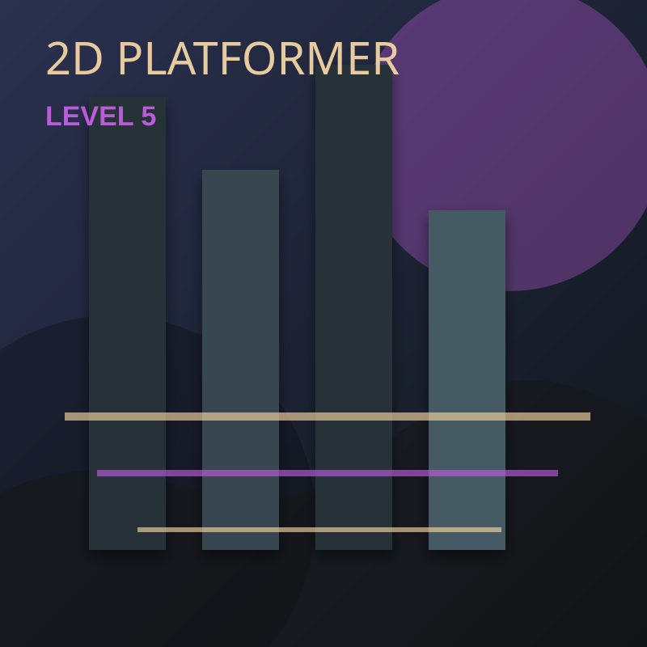

NekoNoir
Engine / Tool: Unity 2D
This page is a clean project case-study template. Replace this paragraph with the project goal, your design responsibility, and the final result.
Design Goals
- Guide the player through readable spatial composition and landmark placement.
- Create pacing variation between navigation, combat, and decision moments.
- Iterate layout based on feedback and playtest observation.
My Contributions
- Graybox layout, encounter spacing, player pathing, and documentation.
- Adjusted cover, verticality, resources, and enemy/objective placement.
- Prepared screenshots, callouts, and portfolio presentation material.